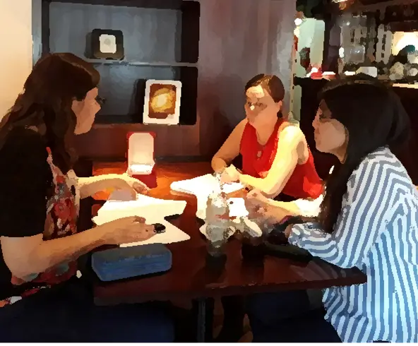
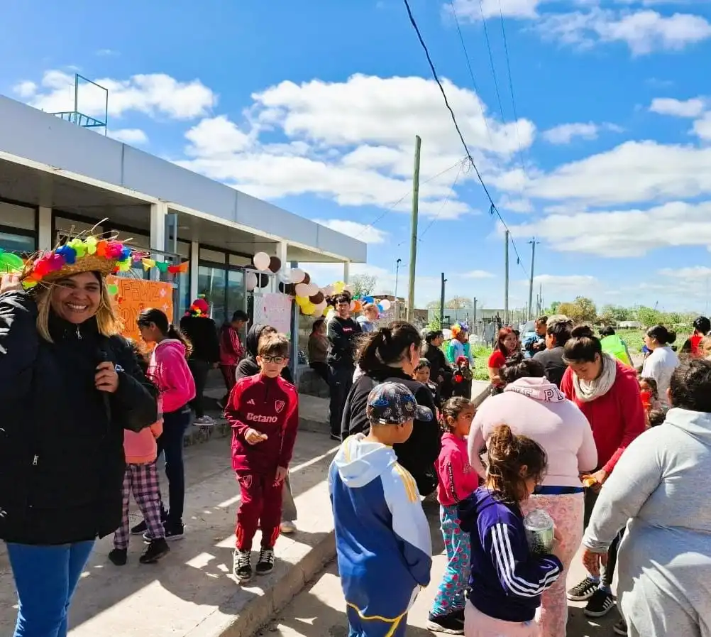
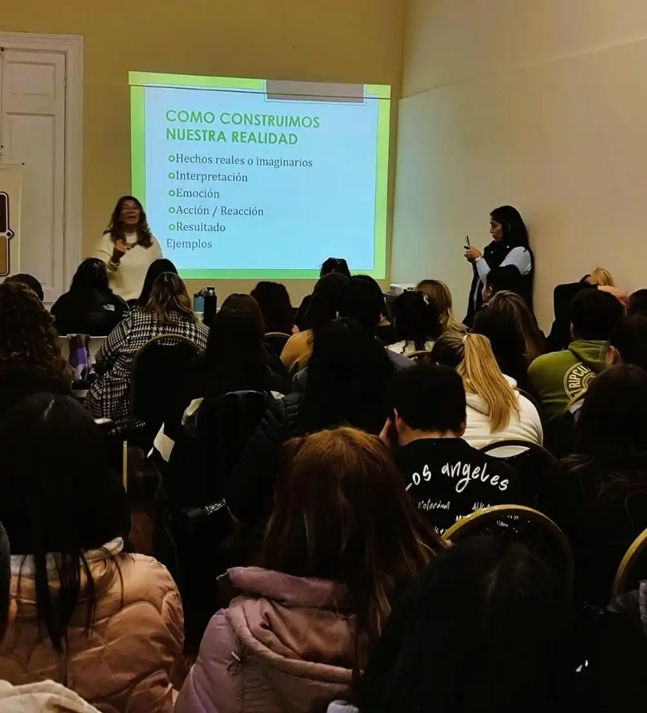
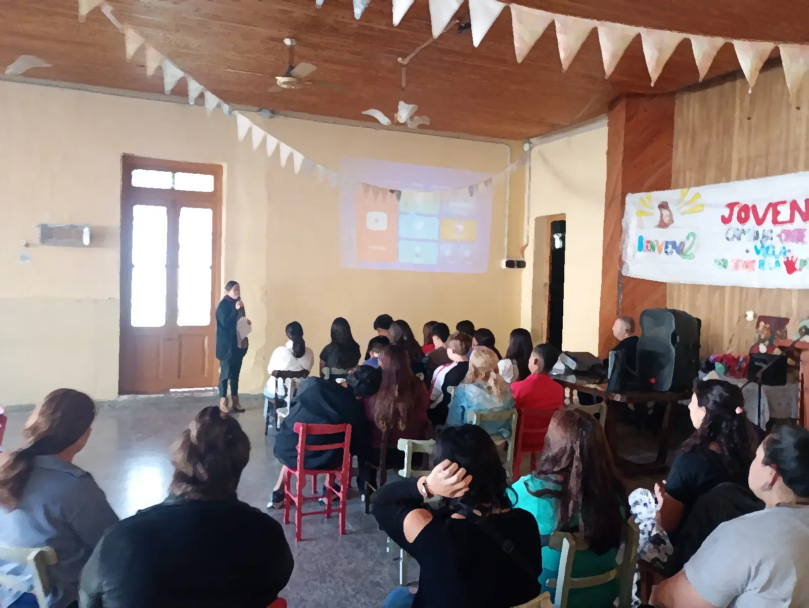
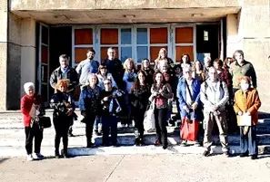
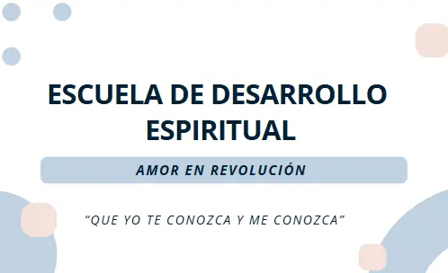

NUESTROS PROGRAMAS
Solidaridad

Click para más info
- ✓ Proyectos socio-comunitarios y ambientales.
- ✓ Articulación con ONGs.
- ✓ Programa de Voluntariado.
- ✓ Derivación de recursos.
- ✓ Capacitaciones.

Click para más info
- ✓ Talleres de formación.
- ✓ Capacitaciones sobre el servicio y voluntariado.
- ✓ Ofrecer voluntariado en una ONG o proyecto;
- ✓ Armar y gestionar Campaña Solidaria.

Click para más info
Brindar Talleres sobre Desarrollo Personal:
- ✓ Habilidades sociales.
- ✓ Comunicación y Liderazgo.
- ✓ Desarrollo humano y valores.
- ✓ Emociones y Estados de Ánimo.
- ✓ Solidaridad y servicio; Otros.
Espiritualidad

Click para más info
- ✓ Duración 1 día, 4 o 5 horas.
- ✓ Tema: "Amor en Revolución"
- ✓ Amarse, amar a los demás y a Dios.
- ✓ Metodología: charla, oración, descanso.
- ✓ Compartir encuentro comunitario.
- ✓ Opcional: en San Nicolás con paseo.

Click para más info
- ✓ Duración 2 día en San Nicolás, Bs. As.
- ✓ Tema: "Retirarse para encontrarse"
- ✓ Amarse, amar a los demás y a Dios.
- ✓ Espiritualidad y Desarrollo Personal.
- ✓ Metodología: charla, oración, descanso.
- ✓ Compartir un encuentro comunitario.

Click para más info
- ✓ Modalidad: virtual.
- ✓ Temas: espiritualidad, desarrollo personal y servicio.
- ✓ Quién sos, Qué deseas, Qué elegís, Cómo amas y Cómo servir.
- ✓ Frecuencia: 1 vez por mes.
- ✓ Para todo público.